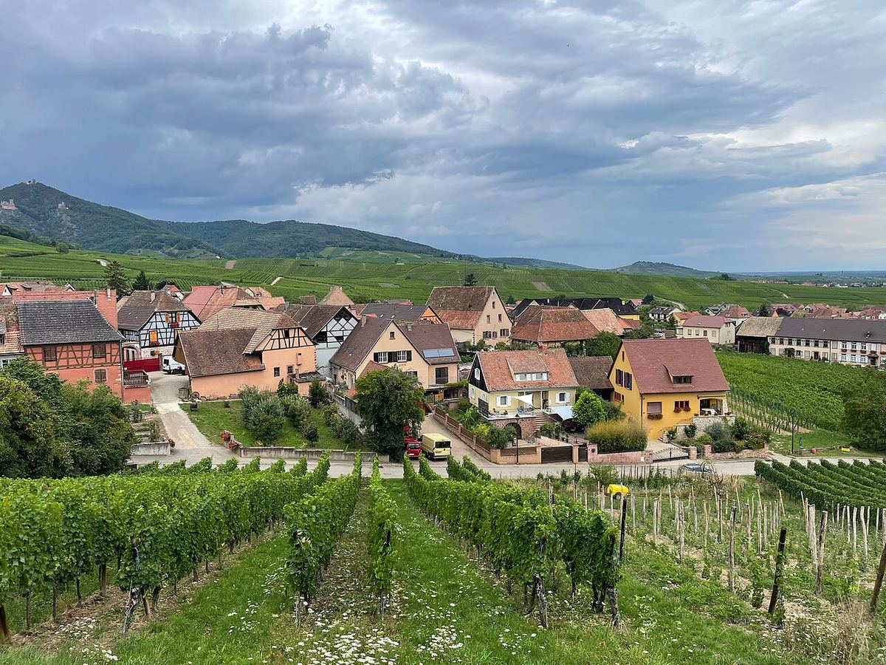
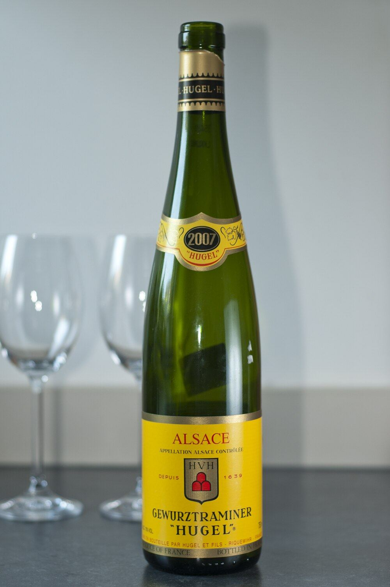
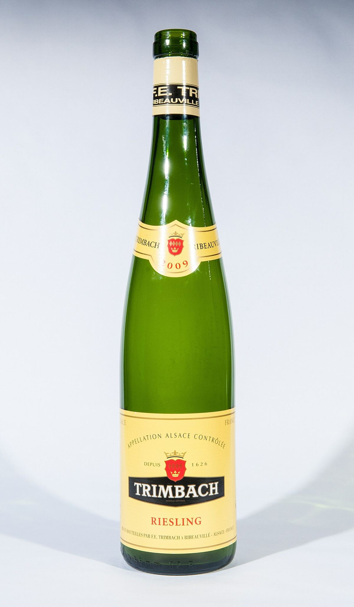

BIANCO
L'Alsazia, tra i Vosgi e il Reno, è una regione di vini bianchi aromatici che, a differenza della maggior parte della Francia, si identificano per vitigno. Riesling, Gewürztraminer, Pinot Grigio e Moscato sono le sue uve più prestigiose.

La viticoltura alsaziana risale all'epoca romana e conobbe una grande prosperità nel Medioevo, quando i suoi vini venivano esportati lungo il Reno verso il Nord Europa. La regione subì poi le devastazioni della guerra dei Trent'anni. La sua storia politica è stata segnata dai passaggi di sovranità tra Francia e Germania: annessa all'Impero tedesco dal 1871 al 1918, periodo in cui buona parte della produzione fu destinata a vini comuni, fu di nuovo occupata durante la Seconda guerra mondiale. Dopo il 1945 si affermò una politica della qualità: la denominazione Alsace fu riconosciuta nel 1962, l'Alsace Grand Cru nel 1975 e il Crémant d'Alsace nel 1976. La Strada dei vini d'Alsazia, che attraversa i paesi vinicoli, fu inaugurata nel 1953.
I vigneti occupano i pendii orientali dei Vosgi, tra circa 200 e 400 metri di altitudine, nei dipartimenti del Basso Reno e dell'Alto Reno. Le montagne proteggono la regione dai venti e dalle piogge occidentali, per cui il clima è semicontinentale, soleggiato e relativamente secco; Colmar è una delle città più asciutte di Francia. Le estati calde e i lunghi autunni consentono una maturazione lenta. La geologia è molto varia a causa della formazione della fossa renana: nel giro di pochi chilometri si succedono graniti, gneiss, scisti, arenarie, calcari, marne e suoli vulcanici, il che spiega la diversità dei grands crus.
L'AOC Alsace copre la maggior parte della produzione e di solito indica il vitigno in etichetta; l'Edelzwicker è un uvaggio di più varietà. L'AOC Alsace Grand Cru comprende 51 vigneti delimitati, come Schlossberg, Rangen, Brand o Kaefferkopf, quest'ultimo aggiunto nel 2007. L'AOC Crémant d'Alsace riunisce gli spumanti metodo classico, prodotti soprattutto con Pinot Bianco, Auxerrois, Riesling, Pinot Grigio, Chardonnay e Pinot Nero. Le menzioni Vendanges Tardives e Sélection de Grains Nobles indicano vini da vendemmia tardiva, i secondi ottenuti da uve spesso colpite dalla muffa nobile. I vini d'Alsazia devono essere imbottigliati obbligatoriamente nella bottiglia alta e slanciata detta flûte.
Sono considerati vitigni nobili il Riesling, che dà bianchi secchi di acidità salda e grande longevità; il Gewürztraminer, molto aromatico, con note di litchi, rosa e spezie; il Pinot Grigio, di corpo ampio; e il Moscato, che in Alsazia è di solito vinificato secco. Completano il quadro il Sylvaner, il Pinot Bianco e il Pinot Nero, unico vitigno a bacca rossa di rilievo, usato per rossi e rosati. Il grado di dolcezza dei bianchi varia secondo il produttore e l'annata, da vini del tutto secchi ad altri con zucchero residuo percepibile.





